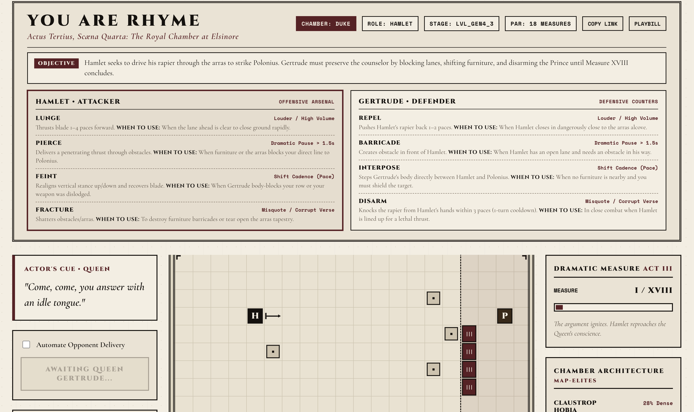
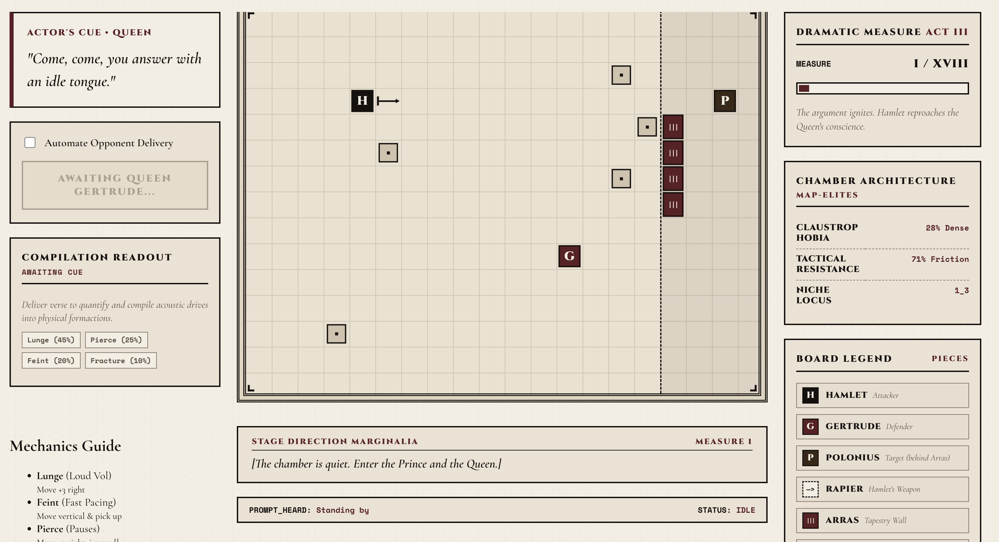

you are rhyme
A game where how you speak Shakespeare changes what happens.
Two actors can speak the same words and produce different worlds. In you are rhyme, a pause can pierce a tapestry or move furniture into an opponent's path.
Developed with Kyle Mitchell and Josh McCoy at UC Davis. I served on the organizing committee of the Workshop on Automated Game Design (WAGD) at AIIDE 2026, where I also showcased our research on November 9. Our demo paper, You Are Rhyme: Making Shakespeare's Formactions Playable, is forthcoming in the WAGD workshop proceedings (CEUR-WS).

Formactions
In Shakespeare's Possible Worlds, Simon Palfrey describes Shakespeare's playworlds as “organic machines, alive with multiplying processes.” Drawing on Leibniz, he develops the concept of formactions: elements of dramatic form, such as rhymes, cues and gaps between lines, that possess capacities for action.
I find this a compelling way to think about Shakespeare computationally. Like a program, a dramatic text contains relationships whose possibilities unfold through execution. Rather than generate new dialogue, we wanted to make qualities of the existing dialogue executable.
The chamber
Two players perform Act III, Scene IV of Hamlet while competing on a 20 × 15 tactical grid. Hamlet attempts to reach Polonius behind the arras (a tapestry); Gertrude tries to prevent him. The eighteen scripted dialogue entries structure the encounter. How the players deliver them changes the stage.

Compiling performance
A local faster-whisper model transcribes speech and supplies word timestamps. We measure volume (RMS), accumulated silence, deviation from the script (normalized Levenshtein distance) and estimated speaking rate relative to 130 words per minute.
Our formaction compiler normalizes these features and selects actions using character-specific thresholds. The same vocal quality produces different effects depending on the role:
- Amplitude: Lunge / Repel
- Silence: Pierce / Barricade
- Cadence variation: Feint / Interpose
- Script deviation: Fracture / Disarm
The compiler also determines action parameters such as movement distance and charge. A readout exposes the competing vocal drives, allowing players to learn how their delivery changes the world.
Evolving the stage
We use evolutionary level generation to explore different stagings of the scene. Candidate chambers vary the positions of the actors, furniture and arras. A genetic algorithm evaluates them through simulated play, rewarding counterplay (35%), action diversity (25%), dramatic tension (25%) and spatial composition (15%).
A 5 × 5 MAP-Elites archive retains strong candidates across two dimensions: claustrophobia and tactical friction. Instead of optimizing for one ideal chamber, we preserve different conditions for performing the same text.
Playing as a way of reading
What interests me is the tension between how I want to deliver a line as an actor and what I want to accomplish as a player. Can the demands of play lead me toward an interpretation I wouldn't otherwise consider?
The system doesn't infer emotion or understand Shakespeare. Its vocal mappings and measures of dramatic tension are authored models, with limitations that need testing against human performance. But they give us something we can experiment with: the relationship between dramatic form, physical space and the act of interpretation.